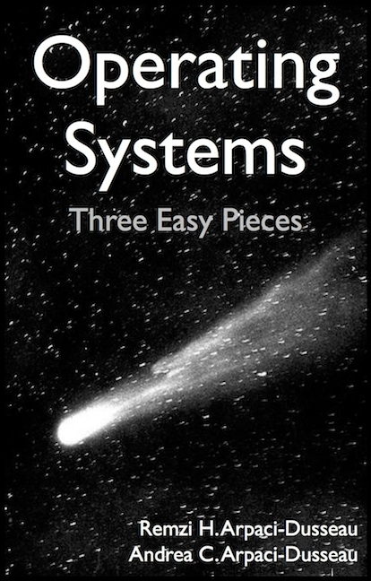

M16 - Estruturas de dados com locks
Prof. Nicola

Operating Systems: Three Easy Pieces
Capítulo 29
ostep.org · gratuito
Um contador, um lock
void increment(counter_t *c) {
pthread_mutex_lock(&c->lock);
c->value++;
pthread_mutex_unlock(&c->lock);
}
1 milhão de incrementos por thread
0,019 s1 thread
0,097 s2 threads
0,303 s4 threads
0,579 s8 threads
não escala
Uma lista ligada
void List_Insert(list_t *L, int key) {
node_t *new = malloc(sizeof(node_t));
if (new == NULL) { perror("malloc"); return; }
new->key = key;
pthread_mutex_lock(&L->lock);
new->next = L->head;
L->head = new;
pthread_mutex_unlock(&L->lock);
}
O malloc fica fora do lock: se falhar, não há lock para esquecer de liberar.
O lock protege só o que é compartilhado: a cabeça da lista.
Uma fila, dois locks
head_lock↓
tail_lock↓
fictício
10
20
30
dequeue só mexe na cabeça; enqueue, só na cauda.
O nó fictício mantém as duas pontas separadas, mesmo com a fila vazia.
Medindo de verdade
Parte 3: os simuladores e o contador.c.
gcc -O2 -Wall -pthread -o contador contador.c ./contador 4 0 ./contador 4 1024

Roteiro e código na página da aula
Para pensar
Um lock justo é sempre mais rápido?
O que pesa mais: o lock em si ou quantas threads disputam o mesmo lock?
Quando um lock só já basta?